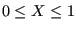
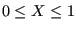

Next: Carbon Seal Up: Fluid Section Types: Gases Previous: Straight and Stepped Labyrinth Contents
Properties: adiabatic, not isentropic, symmetric
Sometimes a network element is described by its characteristic curve, expressing the reduced mass flow as a function of the pressure ratio (Figure 91). This allows the user to define new elements not already available.
The reduced flow is defined by
 |
(60) |
where  is the mass flow,
is the mass flow,  is the upstream total temperature
and
is the upstream total temperature
and  is the upstream total pressure. Here “upstream” refers to the
actual flow direction, the same applies to “downstream”. The abscissa of the curve is defined
by
is the upstream total pressure. Here “upstream” refers to the
actual flow direction, the same applies to “downstream”. The abscissa of the curve is defined
by
| (61) |
where  is the downstream total pressure. Notice that
. It is advisable to define Y for the complete X-range. If not,
constant extrapolation applies. Notice that zero and small slopes of the curve
can lead to convergence problems. This is quite natural, since the reduced
flow corresponds to the left hand side of Equation(38), apart
from a constant. Zero
slope implies a maximum, which corresponds to sonic flow (cf. the discussion of Equation(38)). In general, some sort of saturation
will occur for values of X close to 1.
is the downstream total pressure. Notice that
. It is advisable to define Y for the complete X-range. If not,
constant extrapolation applies. Notice that zero and small slopes of the curve
can lead to convergence problems. This is quite natural, since the reduced
flow corresponds to the left hand side of Equation(38), apart
from a constant. Zero
slope implies a maximum, which corresponds to sonic flow (cf. the discussion of Equation(38)). In general, some sort of saturation
will occur for values of X close to 1.
The characteristic curve is defined by the following parameters (to be specified in that order on the line beneath the *FLUID SECTION, TYPE=CHARACTERISTIC card):
Use more cards if more than two pairs are needed (maximum 16 entries per line, i.e. 8 pairs). No more than 10 pairs in total are allowed. In between the data points CalculiX performs an interpolation (solid line in Figure 91). In addition, the default point (0,0) is added as first point of the curve.
The scaling factor (first entry) is used to scale the ordinate values Y.
Example files: characteristic.